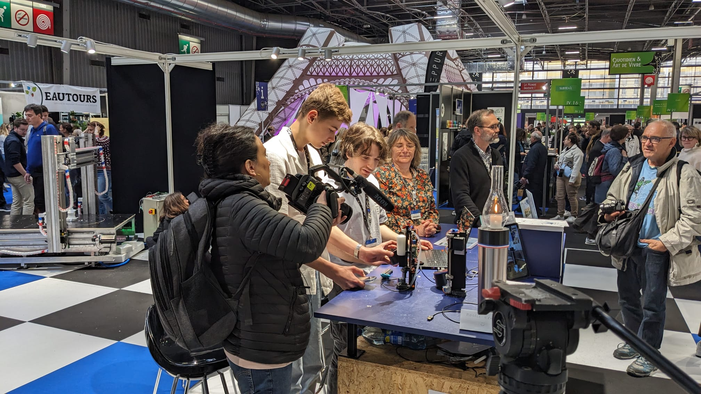

Aujourd'hui, nous avons rencontré M6 pour une illustration dans zone interdite.
Ce dispositif offre une autonomie aux personnes déficientes visuelles leur donnant les moyens de développer une perception tout à fait nouvelle de leur environnement. Il s’agit d'une mini-caméra, clipsable sur des lunettes, qui envoie l’environnement 3D de la personne en langage haptique. Elle est connectée à une ceinture lombaire qui reproduit tactilement ces images dans le dos grâce à une intelligence artificielle intégrée.
https://www.arthafrance.com/fr/En pédalant, vous combattez les risques pour la santé liés à un mode de vie sédentaire tels que: La prise de poids, l’hypertension, les maladies cardiovasculaires, le diabète, le risque de cancer du côlon et du poumon, l’ostéoporose, les troubles lipidiques, la dépression et l’anxiété.
https://www.eveia.io/fr/benefices